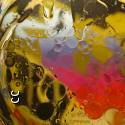

About Me
My name is Noa. I have lived in Raleigh NC for the last 13 years. In my early twenties I traveled the world for around three years. North Carolina is truly a very unique place. A perfect combination of a small town and a city. In my spare time I like to spend time with my family, read, and play poker.
The IT field is something that I have developed a taste for quite recently. As someone that always loved puzzles, I fell in love with coding from my first line of code. Learning how to code is like learning a new language, however, the difference is that behind the language of a code there is logic. That is in sharp contrast to many spoken languages if not all.
I can not wait to enrich my knowledge in the language of logic.
Connect With Me